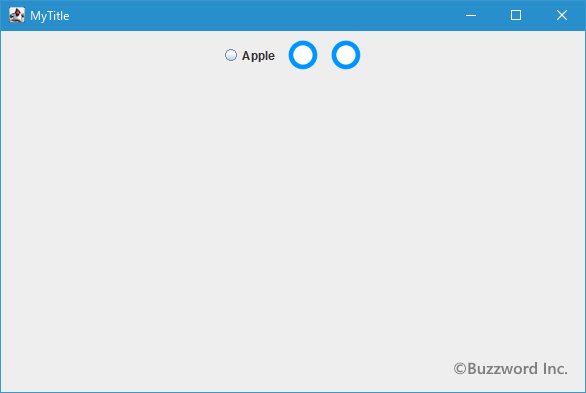
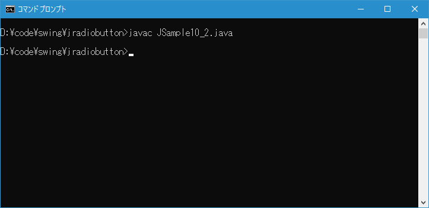
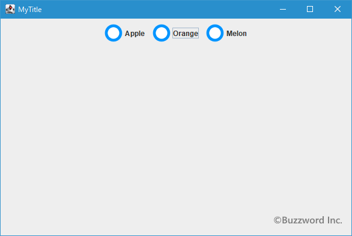
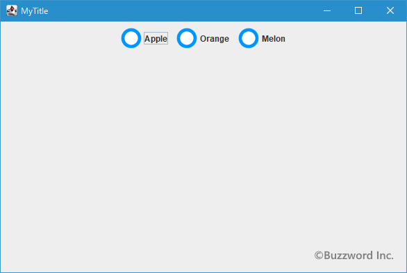
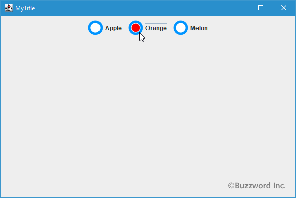
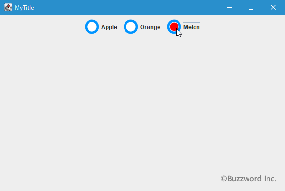

ラジオボタンに選択時と非選択時の画像をそれぞれ表示する
ラジオボタンには文字列だけではなく画像を表示することもできます。ここではラジオボタンに画像を表示する方法について解説します。なおラジオボタンに画像を設定すると、ラジオボタンの左側に表示されている選択されているかどうかを表示する小さなサークルが表示されなくなります。その為、ラジオボタンが選択されている時は、それが分かるように異なる画像を設定する方法もあわせて解説します。
ラジオボタンに画像を表示する
最初に JRadioButton のコンストラクタで画像を指定する方法です。次のコンストラクタを使用します。
public JRadioButton?(Icon icon)
初期状態では選択解除されているラジオ・ボタンを、イメージの指定あり、テキストの指定なしで作成します。
パラメータ:
icon - ボタンで表示するイメージ
引数には表示したい画像を表す Icon インターフェースを実装したクラスのオブジェクトを指定します。 Java では Icon インターフェースを実装したクラスとして ImageIcon クラスが用意されており、今回は ImageIcon クラスのオブジェクトを指定してみます。( ImageIcon クラスについては「ImageIconクラス」を参照して下さい)。
実際の使い方は次のようになります。
ImageIcon icon = new ImageIcon("./img/sample.png");
JRadioButton radio = new JRadioButton(icon);
PNG形式の画像からImageIconクラスのオブジェクトを作成し、ボタンのコンストラクタの引数に指定しています。
また画像の指定と同時に選択状態を指定する次のコンストラクタも用意されています。
public JRadioButton?(Icon icon,
boolean selected)
ラジオ・ボタンを、選択状態とイメージの指定あり、テキストの指定なしで作成します。
パラメータ:
icon - ボタンで表示するイメージ
selected - trueの場合、初期状態でボタンが選択される。それ以外の場合、初期状態でボタンは選択されない
1 番目の引数にはコンストラクタの場合と同じく Icon インターフェースを実装したクラスのオブジェクトを指定します。 2 番目の引数にチェックボックスを選択した状態にするか非選択の状態にするかを表す boolean 型の値を指定します。 true を指定すれば選択状態となり false を指定すれば非選択の状態となります。
実際の使い方は次のようになります。
ImageIcon icon = new ImageIcon("./img/sample.png");
JRadioButton radio = new JRadioButton(icon, true);
サンプルプログラム
それでは簡単なサンプルプログラムを作って試してみます。テキストエディタで次のように記述したあと、 JSample10_1.java という名前で保存します。
import javax.swing.JFrame;
import javax.swing.JRadioButton;
import javax.swing.JPanel;
import javax.swing.ButtonGroup;
import javax.swing.ImageIcon;
import java.awt.Container;
import java.awt.BorderLayout;
class JSample10_1 extends JFrame{
public static void main(String args[]){
JSample10_1 frame = new JSample10_1("MyTitle");
frame.setVisible(true);
}
JSample10_1(String title){
setTitle(title);
setBounds(100, 100, 600, 400);
setDefaultCloseOperation(JFrame.EXIT_ON_CLOSE);
ImageIcon icon = new ImageIcon("./not_select.png");
JRadioButton radio1 = new JRadioButton("Apple");
JRadioButton radio2 = new JRadioButton(icon);
JRadioButton radio3 = new JRadioButton(icon, true);
ButtonGroup bgroup = new ButtonGroup();
bgroup.add(radio1);
bgroup.add(radio2);
bgroup.add(radio3);
JPanel p = new JPanel();
p.add(radio1);
p.add(radio2);
p.add(radio3);
Container contentPane = getContentPane();
contentPane.add(p, BorderLayout.CENTER);
}
}
次のようにコンパイルを行います。
javac JSample10_1.java
コンパイルが終わりましたら実行します。
java JSample10_1
ラジオボタンを 3 つ追加しました。 1 つ目は文字列を指定したラジオボタン、 2 つ目と 3 つ目のラジオボタンは画像を指定して作成しています。

ラジオボタンでは画像を設定するとラジオボタンの左側に表示されていた小さなサークルの位置に画像が表示されるためサークルが表示されなくなります。その為、ラジオボタンが現在選択されているかどうか区別が付きません。画像を設定する場合にはデフォルトで表示される画像とは別に選択されている時に別の画像を表示するように設定します。
ラジオボタンに画像と文字列を両方表示する
ラジオボタンには文字列と画像のどちらかではなく両方を表示することができます。次のコンストラクタを使用します。
public JRadioButton?(String text,
Icon icon)
初期状態では選択解除のラジオ・ボタンを、テキストとイメージの指定ありで作成します。
パラメータ:
text - ラジオ・ボタンに表示する文字列
icon - ボタンで表示するイメージ
1 番目の引数にはラジオボタンに表示する文字列を String クラスのオブジェクトで指定します。 2 番目の引数には前のコンストラクタと同じくIconインターフェースを実装したクラスのオブジェクトを指定します。
実際の使い方は次のようになります。
ImageIcon icon = new ImageIcon("./img/sample.png");
JRadioButton radio = new JRadioButton("Apple", icon);
文字列を引数に指定してラジオボタンを作成したあとで setIcon メソッドを使って画像を設定することもできます。この場合、文字列が画像に置き換わるのではなく文字列に画像が追加されます。
setIcon は JRadioButton クラスの親クラスである AbstractButton クラスで定義されています。
public void setIcon?(Icon defaultIcon)
ボタンのデフォルトのアイコンを設定します。 明示的な指定がない場合、このアイコンはボタンが「押された」状態、および「無効な」状態を示すアイコンにも使用されます。
パラメータ:
defaultIcon - デフォルト状態の表示に使用されるアイコン
実際の使い方は次のようになります。
ImageIcon icon = new ImageIcon("./img/sample.png");
JRadioButton radio = new JRadioButton("Apple", icon);
ImageIcon icon = new ImageIcon("./img/sample.png");
JRadioButton radio = new JRadioButton("Apple");
radio.setIcon(icon);
画像を引数に指定してチェックボックスを作成したあとで setText メソッドを使って文字列を設定することもできます。この場合、画像が文字列に置き換わるのではなく画像に文字列が追加されます。
ImageIcon icon = new ImageIcon("./img/sample.png");
JRadioButton radio = new JRadioButton(icon);
radio.setText("Travel");
なお文字列と画像の両方をラジオボタンに表示した場合、デフォルトでは画像が左、文字列が右、という位置関係で表示されます。
サンプルプログラム
それでは簡単なサンプルプログラムを作って試してみます。テキストエディタで次のように記述したあと、 JSample10_2.java という名前で保存します。
import javax.swing.JFrame;
import javax.swing.JRadioButton;
import javax.swing.JPanel;
import javax.swing.ButtonGroup;
import javax.swing.ImageIcon;
import java.awt.Container;
import java.awt.BorderLayout;
class JSample10_2 extends JFrame{
public static void main(String args[]){
JSample10_2 frame = new JSample10_2("MyTitle");
frame.setVisible(true);
}
JSample10_2(String title){
setTitle(title);
setBounds(100, 100, 600, 400);
setDefaultCloseOperation(JFrame.EXIT_ON_CLOSE);
ImageIcon icon = new ImageIcon("./not_select.png");
JRadioButton radio1 = new JRadioButton("Apple", icon);
JRadioButton radio2 = new JRadioButton("Orange", true);
radio2.setIcon(icon);
JRadioButton radio3 = new JRadioButton(icon);
radio3.setText("Melon");
ButtonGroup bgroup = new ButtonGroup();
bgroup.add(radio1);
bgroup.add(radio2);
bgroup.add(radio3);
JPanel p = new JPanel();
p.add(radio1);
p.add(radio2);
p.add(radio3);
Container contentPane = getContentPane();
contentPane.add(p, BorderLayout.CENTER);
}
}
次のようにコンパイルを行います。
javac JSample10_2.java

コンパイルが終わりましたら実行します。
java JSample10_2
ラジオボタンを 3 つ追加しました。 1 つ目のラジオボタンは文字列と画像を指定して作成したもの、 2 つ目のラジオボタンは文字列を指定して作成したあとで画像を追加したもの、 3 つ目のラジオボタンは画像を指定して作成したあとで文字列を追加したものです。。

ラジオボタンが選択されている時に別の画像を表示する
ラジオボタンに画像を設定した場合、ラジオボタンが選択されている状態かそうでないのかが分からなくなります。その為、ラジオボタンに画像を設定する場合は、合わせてラジオボタンが選択されている時に別の画像を表示するように設定をします。
ラジオボタンで選択された時の画像を設定するには JRadioButton クラスの親クラスである AbstractButton クラスで用意されている setSelectedIcon メソッドを使います。
public void setSelectedIcon?(Icon selectedIcon)
選択された状態のボタンのアイコンを設定します。
パラメータ:
selectedIcon - 「選択されたボタン」の表示に使用されるアイコン
引数にはコンストラクタで画像を設定した時と同じくIconインターフェースを実装したクラスのオブジェクトを指定します。
実際の使い方は次のようになります。
ImageIcon icon = new ImageIcon("./img/sample.png");
ImageIcon icon_check = new ImageIcon("./img/check.png");
JRadioButton radio = new JRadioButton("Apple", icon);
radio.setSelectedIcon(icon_check);
ラジオボタンにデフォルトで sample.png の画像を表示し、ラジオボタンが選択されている時は check.png の画像を表示します。
サンプルプログラム
それでは簡単なサンプルプログラムを作って試してみます。テキストエディタで次のように記述したあと、 JSample10_3.java という名前で保存します。
import javax.swing.JFrame;
import javax.swing.JRadioButton;
import javax.swing.JPanel;
import javax.swing.ButtonGroup;
import javax.swing.ImageIcon;
import java.awt.Container;
import java.awt.BorderLayout;
class JSample10_3 extends JFrame{
public static void main(String args[]){
JSample10_3 frame = new JSample10_3("MyTitle");
frame.setVisible(true);
}
JSample10_3(String title){
setTitle(title);
setBounds(100, 100, 600, 400);
setDefaultCloseOperation(JFrame.EXIT_ON_CLOSE);
ImageIcon icon = new ImageIcon("./not_select.png");
ImageIcon icon_select = new ImageIcon("./select.png");
JRadioButton radio1 = new JRadioButton("Apple", icon);
radio1.setSelectedIcon(icon_select);
JRadioButton radio2 = new JRadioButton("Orange", icon);
radio2.setSelectedIcon(icon_select);
JRadioButton radio3 = new JRadioButton("Melon", icon);
radio3.setSelectedIcon(icon_select);
ButtonGroup bgroup = new ButtonGroup();
bgroup.add(radio1);
bgroup.add(radio2);
bgroup.add(radio3);
JPanel p = new JPanel();
p.add(radio1);
p.add(radio2);
p.add(radio3);
Container contentPane = getContentPane();
contentPane.add(p, BorderLayout.CENTER);
}
}
次のようにコンパイルを行います。
javac JSample10_3.java
コンパイルが終わりましたら実行します。
java JSample10_3
ラジオボタンを 3 つ追加しました。ラジオボタンをクリックして選択状態にするとデフォルトの画像とは異なる画像が表示されます。



-- --
ラジオボタンに画像を表示する方法について解説しました。
( Written by Tatsuo Ikura )

著者 / TATSUO IKURA
初心者～中級者の方を対象としたプログラミング方法や開発環境の構築の解説を行うサイトの運営を行っています。